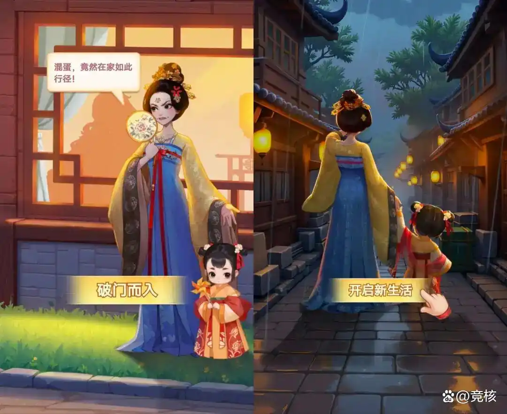
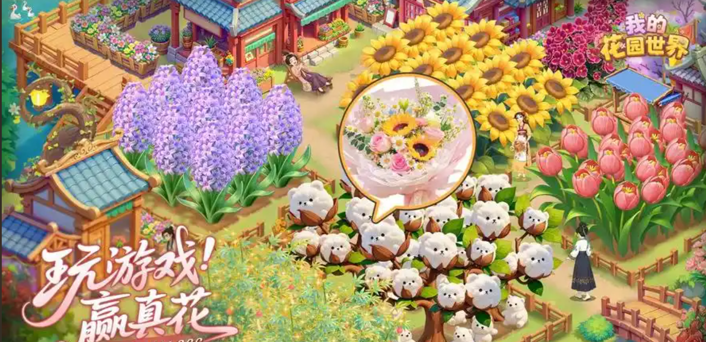
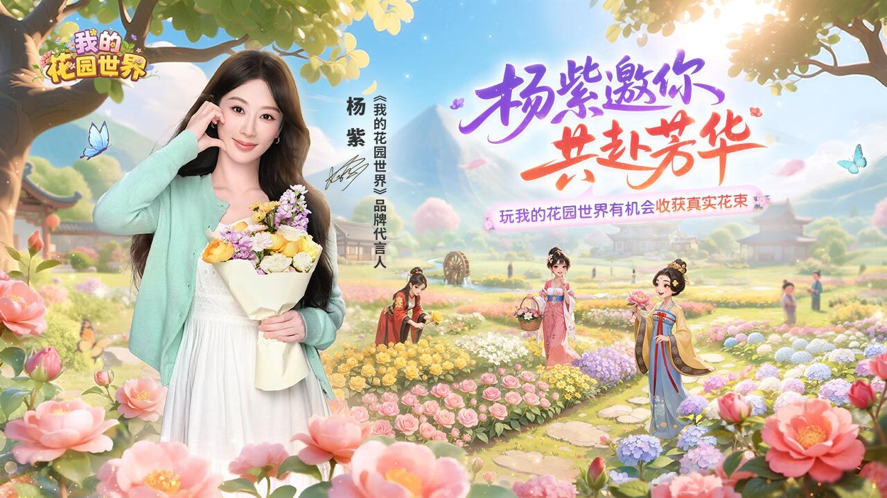
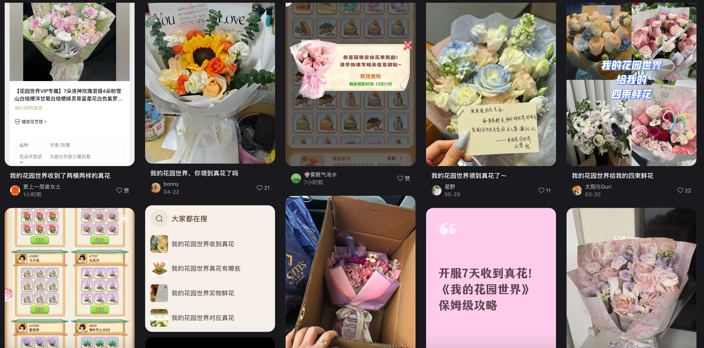
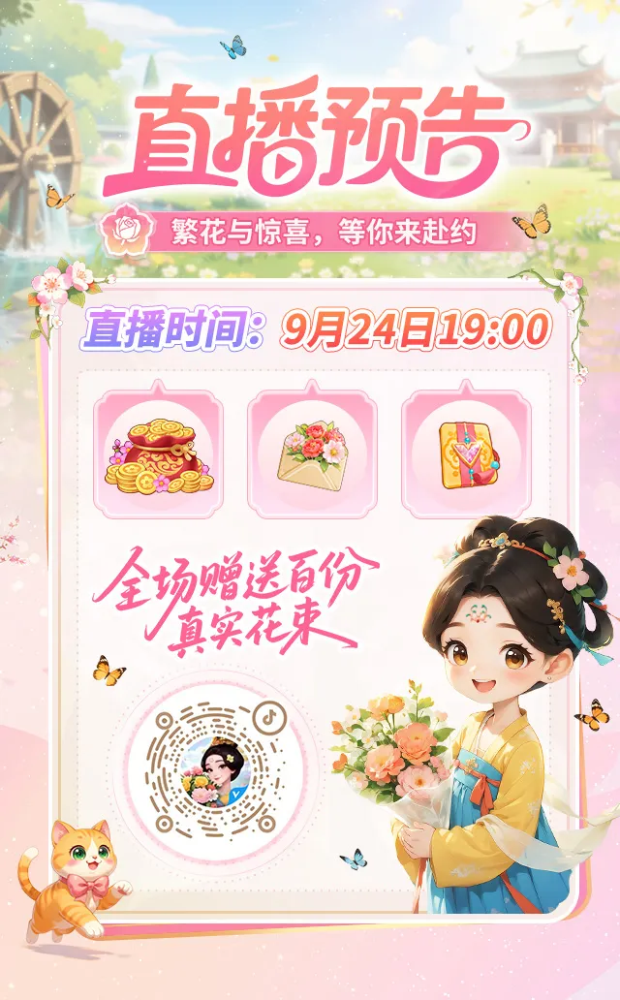
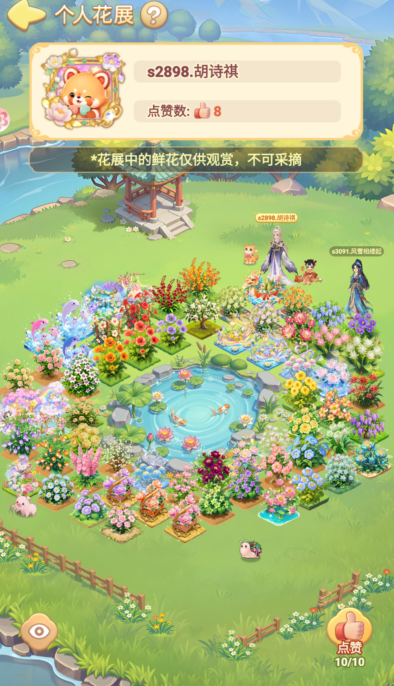
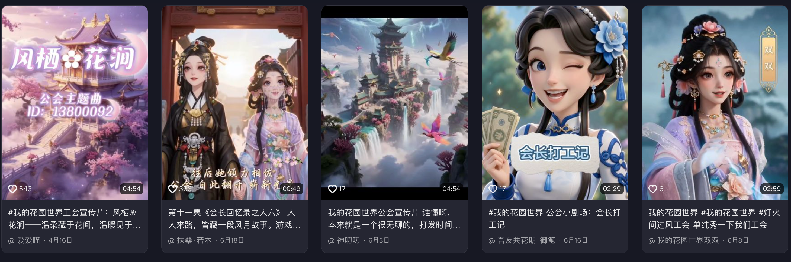

学历、工作、婚恋、身材管理和穿搭品味，都在回答“我处于什么位置”。
CASE STUDYGARDEN WORLD
CASE STUDY
《我的花园世界体验报告》
一款种花小游戏成功的原因是什么？
LTV法
买量大法
厦门麟贝互娱并不是突然跑出来的小团队。公司成立多年，和厦门摩多有一定关系，过往产品覆盖官斗、女性剧情向、模拟经营等方向。
从《皇上吉祥》到《花之舞》，可以看到它们在女性向剧情、长线养成上已经积累很久。
《花园》的成功，不是一次偶然。重度官斗+女性向团队，用多年打磨出来的重运营内核和发行宣发经验，把身份成长、关系竞争和长线养成压缩进一款看上去很轻的种花小游戏。
产品上线2025.08.05上线节点
iOS游戏畅销榜#13稳居前 15 附近
排名含金量Top 15前列多为亿级流水产品
七麦数据iOS游戏畅销榜 TOP15 对比
1王者荣耀动作腾讯
2三角洲行动动作腾讯
3和平精英动作腾讯
4无尽冬日模拟点点
5无畏契约：源能行动动作腾讯
6开心消消乐休闲乐元素
7金铲铲之战卡牌腾讯
8梦幻西游动作网易
9洛克王国：世界冒险腾讯
10捕鱼大作战-街机捕鱼模拟途游
11火影忍者动作腾讯
12恋与深空模拟叠纸
13我的花园世界休闲麟贝
14向僵尸开炮射击大梦龙途
15蛋仔派对休闲网易
对比口径：七麦截图中《我的花园世界》位于 iOS 游戏畅销榜 #13，已经进入 0-15 头部产品带。
Michael
封面与信息介绍合并页。左侧报告标题和厂商信息，右侧产品数据快照。
CONCLUSION
结论
它不是种花游戏爆款，而是重度游戏模型的轻量化重构
《花园》的成功，在我看来，是来自三件事叠加：发行双策略、玩法内核、商业化成熟。
发行双策略
游戏本身就是内容源，真实宣传、狗血剧情、真花晒图，天然适配社交平台传播。
玩法内核
它满足的是女性玩家的社交地位需求，而不只是轻结构的打发时间。
商业化成熟
稀缺、差一步完成和损失厌恶，让玩家进入持续付费链路。
不是“种花能火”，而是“重度内核换轻外壳”。
Michael
第三页结论页。三列顺序为发行、玩法、商业化。
发行节奏PART 1
发行节奏
起量不是偶然，而是阶段式放量
App 起盘、小游戏国庆爆发、联动代言与直播持续抬升，构成完整节奏。
8月
App 端上架
从畅销百名左右持续爬升
9月底
小游戏上线
卡国庆档，放大微信社交扩散
10-11月
榜单突破
小游戏榜前列，多次进入 iOS 畅销前 10
12月后
联动/代言/节日
抖音、微信小游戏榜首多次出现
一个完整的链条：狗血剧情负责把人拉进来；真花活动负责在社交平台上点燃声量；国庆小游戏负责把这把火烧到更大盘的女性用户里。
Michael
阶段式放量页。强调发行节奏和完整转化链条。
发行钩子PART 1
发行钩子
真花、狗血剧情、小游戏节点共同转化
题材拉动情绪，真花验证信任，小游戏放大女性用户盘。

狗血剧情
出轨、离婚、带娃、逆袭开店，用最短链路完成不爽到代入。

种花拿真花
虚拟奖励变成现实生活资产，“有人真的收到花”变成平台信任证据。

国庆小游戏
微信小游戏低门槛、强社交，适合假期女性用户尝试和扩散。
发行不是单点买量素材，而是产品从一开始就被做成传播议题。
Michael
发行钩子页。三类内容共同完成转化。
真花传播PART 1
真花传播
“有人真的能收到花”——信任钩子
真实把虚拟奖励变成现实里的可晒资产，形成社交平台信任链。
广告看到真花
进入游戏种花
玩家收到实物
朋友圈/小红书晒图
围观者被转化
几十块的实物奖励，真正价值在于反复生成“这花是真的”的社交证据，形成长尾的转化漏斗。这样的真实案例会带来一些高质量转化，同时制造声浪。
真实社交证据玩家收到真花后的公开晒图与搜索内容

再次点击 / → 进入下一页
Michael
传播漏斗页。可以放真实晒花截图。
内容源PART 1
内容源
游戏本身就是传播内容源
真花、剧情、晒图、直播、联动都能持续长出内容。
狗血剧情
种花赢真花晒图
花园展示
内容源
联动代言
直播间限时福利
公会故事



《花园》不是把广告内容化，而是从产品层面，把游戏本身做成了内容源头，不断产出传播对象。
Michael
内容源页。强调产品本身持续产生传播素材。
玩法内核PART 2
前期上头
钩子-循环-连结-惊喜
真花和剧情吸引进入，经营循环留住，社交关系制造退出成本。
钩子
真花利益钩子 + 狗血剧情情绪钩子
循环
种花、收花、订单、解锁，短密顺
连结
好友、闺蜜、公会、微信群外溢
惊喜
订单、偷花、市场、随机公会任务
短
密
顺
系统前期极简，操作流程闭环：每步必有后续，每步皆可关联。
Michael
前期体验模型页。
体验上头四步法PART 2
01
钩子
Hook先抓住注意力，才能让玩家进入后续体验
◎
用现实奖励 + 强情绪内容，
把玩家快速拉进来。
1
现实奖励钩子
- 种花赢真花，把抽象游戏奖励变成现实可想象、可炫耀的具体东西。
- 奖励从“数值”变成“真实花束”，一下拉低注意力门槛。
2
情绪钩子
- 抓奸、离婚、带娃、逆袭开店，短时间打出“被背叛—反击—自立”的情绪线。
- 让玩家迅速代入：我不只是种花，我是在逆袭。
结果：快速吸引注意力，形成进入后续循环的入口
钩子的作用不是留住所有人，而是先完成注意力获取，为后续循环承接创造入口。
Michael
体验上头四步法 01 钩子。现实奖励钩子：种花赢真花，从抽象游戏奖励变成现实可想象、可炫耀的具体东西，拉低注意力门槛。情绪钩子：抓奸、离婚、带娃、逆袭开店，虽然俗但有效，短时间里把“被背叛—反击—自立”这条情绪线打出来，让玩家迅速代入“我不只是种花，我是在逆袭”。
体验上头四步法PART 2
02
循环
Loop《花园》的基础体验：短、密、顺
↻
短、密、顺的基础体验，
让玩家低成本进入连续行动。
种植种子
浇水培育
收获鲜花
升级花园
短单次操作成本低，点一两下即可完成。
密反馈频率高，收花、交任务、升级形成多层反馈。
顺多个目标错峰循环，做完 A，B 又能接上，推动玩家持续行动。
剧情身份承接
剧情赋予玩家“开花店的大女主”身份，让种花、接单、布置承接狗血剧情情绪的主观成长。
循环承担“承接”作用：短操作降低进入门槛，密反馈持续给到成长感，顺目标让玩家做完一个目标后自然接上下一个目标。
一次完整的种植循环
点击花朵开始，经历操作与即时反馈，直到收获结束。

再次点击 / → 进入“连结”
Michael
第十页补充《花园》的基础体验：短、密、顺。短是单次操作成本低，点一两下即可完成；密是反馈频率高，收花、交任务、升级形成多层反馈；顺是多个目标错峰循环，做完 A，B 又能接上。剧情赋予玩家“开花店的大女主”身份，让种花、接单、布置承接狗血剧情情绪的主观成长。
体验上头四步法PART 2
03
连结
Connection从叙事连结到真实关系网，让轻度体验产生关系成本
👥
前期用剧情给身份，
中后期用关系网留住人。
公会
我
好友
闺蜜
公会
微信
关系网
世界喊话求花
偷花、好友、闺蜜
互助、公会战、外部群
叙事连结狗血剧情提供“被需要、被认可”的大女主身份。
游戏连结世界聊天、偷花、好友、闺蜜、公会互助和公会战。
外部连结高屏蔽词把玩家导向微信，形成更接近熟人社交的关系。
结果：我不是在单机，我需要别人，也被别人需要
玩家在意的不只是系统有没有给奖励，而是自己在这个公会、这个关系网里有没有位置。轻度体验因此慢慢变成一种有关系成本的体验。
Michael
体验上头四步法 03 连结。前期狗血剧情提供“被需要、被认可”的大女主身份，可以称为叙事连结；中后期通过世界聊天、偷花、好友、闺蜜、公会互助和公会战，让玩家进入真正的关系网。游戏中的高屏蔽词也会把玩家导向微信，产生更接近熟人社交、更容易触发的游戏连结。玩家开始意识到：我不是在单机，我需要别人，也被别人需要。这一步把原本可以随时退出的轻度体验，慢慢变成一种有关系成本的体验。
体验上头四步法PART 2
04
惊喜
Surprise持续补充新鲜感，维持长期上头
✦
源源不断的新刺激，
决定热度能维持多久。
01真花奖励把线上收获延伸到现实
02花灵产出稀有掉落带来持续期待
03珍珠抽奖随机奖励制造惊喜感
新鲜感
04公会竞赛任务群体目标提升参与驱动
05偷花社交博弈带来刺激感
06市场有没有好花反复刷新关注花架
结果：持续制造新鲜目标与期待，延长热度与留存
惊喜不只是“奖励更多”，而是结果相对预期出现偏差；多层随机不断重置期待，让玩家愿意再看一次。
奖励预测误差 · RPE
当实际结果高于预期，会产生正向预测误差，并更新玩家对下一次结果的期待。
Schultz, Dayan & Montague, 1997Michael
体验上头四步法 04 惊喜。
惊喜机制PART 2
惊喜的随机层级
随机设计最巧的一点，是把惊喜藏进关系与系统规则的自然碰撞里
强随机主要放在留存、付费和积累释放里；更上头的随机来自玩家关系与系统规则的碰撞。
随机层级
对应内容
体验作用
弱随机
小动物、宠物等轻随机内容
提供轻度惊喜，但不承担核心上头和付费压力。
产出随机
福利宝箱、宠物等随机产出
游戏有意控制释放量，随机内容不算激进。
积累-释放
采集珍珠、抽花等长期积累后的奖励释放
强随机乐趣集中在这里，珍珠出 188 元宝会形成明显爽感。
关系 × 规则随机
市场刷花、偷花、花灵、公会战任务
市场能否刷到花、偷花有没有好花、任务是否刷到自己有的花，这类随机最自然也更上头。
Michael
随机页。这里强调《花园》的随机设计整体偏保守：小动物、宠物属于弱随机；福利宝箱、宠物等随机产出释放较少；采集珍珠是长期积累-释放的奖励玩法，出 188 元宝会很爽。更自然的随机来自社交关系和系统规则叠加，比如市场能不能刷到花、偷花有没有好花，花灵和公会战能不能刷到自己有的花的任务。这类随机更自然，也更容易上头。
需求洞察PART 2
需求洞察
核心需求不是社交，而是被柔化的地位竞争
剑三、暖暖、王者都只满足了一部分；《花园》把归属、成就与位置确认压进日常经营。
竞争的真实形态
无论男女，都会本能反感赤裸竞争；真正有效的竞争，往往藏在关系、审美、身份和群体荣誉里。
谁更出众、谁能创造价值、谁在项目中不可替代；工资和奖金继续强化比较。
群体荣誉
公会甲级、连冠、排名与共同身份
位置确认
我有没有被需要、被认可、被看见
关系归属
好友、闺蜜、公会、微信群
审美展示
花园、花艺、名片、鲜花数
归属感 × 成就感 × 位置确认玩家比较的不是谁击败了谁，而是谁更像样、更出众、在群体里更有价值。
Michael
社交地位需求洞察页。无论男女，都会本能地反感赤裸裸的竞争。真正有效的竞争，通常被包裹在更柔和、更体面、更生活化的关系与目标中，藏在审美、身份、关系和群体荣誉里。现实生活中的学历、工作、婚恋、身材和穿搭是隐形排行榜；组织中也会比较谁更出众、谁能创造价值、谁在项目中不可替代，工资和奖金继续强化比较。《花园》把这种位置竞争包装成花园展示、关系归属、被认可和公会荣誉，同时满足归属感、成就感和位置确认。
需求缺口SOCIAL STATUS
需求缺口
女性玩家缺少的，不是社交，而是体面的地位竞争
玩家既要确认“我在圈子里的位置”，也要确认“我的群体在其他群体中的位置”。
竞争不会消失无论男女都会反感赤裸竞争；真正有效的竞争，会被包裹在关系、审美、身份与群体荣誉里。
01男性重度游戏
地位竞争充分，女性体验不足
战力、坐骑、排行与帮会竞争非常成熟，但女性玩家常只是被区别对待的“女性”。
02传统女性向
情感陪伴充分，现实投射较弱
提供恋爱、陪伴和情绪价值，却较少承接现实中的位置、贡献与群体荣誉。
03换装与竞技
只满足了地位需求的一部分
暖暖用穿搭 PK 把竞争包进审美养成；剑三、王者则分别承接关系或竞技位置。
个人位置被看见 · 被需要 · 被认可
×
群体位置公会排名 · 群体荣誉 · 共同身份
= 社交地位
《花园》的核心把 MMO 最有效的地位竞争，重构成女性用户更愿意接受的生活化目标；它同时支撑归属感、成就感、长线留存与付费。
Michael
需求缺口页。《花园世界》真正满足的不只是社交，而是社交地位：玩家既要确认自己在圈子里的位置，也要确认自己的群体在其他群体中的位置。这是 MMO 成功的核心，也是《花园》长线留存和付费设计的核心。过去关于地位和竞争的游戏大多为男性玩家设计，女性玩家很少获得足够好的体验；现有女性向产品更多满足情感和陪伴需求，又较少投射到现实中的位置与群体荣誉。暖暖用穿搭 PK 评分把明面竞争包进审美与养成，但也只满足了一部分。无论男女都会反感赤裸竞争，真正有效的竞争会被包裹在更柔和、体面和生活化的关系、审美、身份与群体荣誉里。《花园》同时提供个人位置和群体位置，把 MMO 的重度竞争重构成女性用户更愿意接受的长期目标。
公会战PRESSURE
重度关系
没有复杂战斗，却保留了重度 MMO 最值钱的东西
系统很轻，但资源互需、贡献竞争、公会升降级与长期关系都被保留下来。
好友与资源
好友摸花与稀有资源交换。
公会贡献
公会任务、个人贡献和排名持续可见。
升降级压力
公会战包含晋级、降级与保级。
双重竞争
内部成员比贡献，外部公会争排名。
长期交流
微信群承接长期交流与现实关系。
退出成本升级玩家放弃的不只是账号资产，还有已经建立的关系、身份和群体位置。
Michael
公会战压力页。《花园》没有复杂战斗，却保留了重度 MMO 最值钱的社交结构：好友摸花与稀有资源交换；公会贡献、任务和排名；公会战的晋级、降级与保级；内部贡献竞争和外部公会竞争；微信群中的长期交流与现实关系。最关键的是，社交关系会从游戏内溢出到微信群。玩家离开的成本不再只是放弃账号，而是可能失去朋友、身份、归属感和已经建立的群体位置。
极简 MMOPART 2
极简 MMO
有交易的最小系统复杂度 × 最大社交压力
系统很轻，但资源互需、贡献可见、关系外溢很重。
轻系统门槛×重关系压力=高退出成本
01产生需求
资源互需
金币买花、稀有花交易、花灵好友位与任务互助，让单人经营开始依赖别人。
→
02制造压力
贡献可见
公会任务、个人积分和是否拖后腿都能被看见，关系开始产生位置压力。
→
03提高成本
关系外溢
世界聊天、好友、闺蜜与公会继续外溢到微信群，退出开始附带真实关系成本。
行为结果“我不能掉队”
系统很轻，关系很重：低门槛负责拉进来，关系网负责留住人。
Michael
极简 MMO 页。
焦虑循环FOMO
行为惯性
游戏成瘾的核心，不是做了多爽，而是不做会难受
害怕失去、害怕错过的焦虑，会把玩家从“想上线”推到“必须上线”。
01不做就少得
戒断焦虑
今天不摸、不偷、不做任务，收益就会落后。
02投入后差一点
损失规避
抽卡、礼包、套系始终留下一个可见缺口。
03完成后还有下一阶
目标追求
图鉴、公会、鲜花数和繁荣度持续向上延伸。
结果玩家从“想上线”被推到“必须上线”，上瘾来自不做会难受。
Michael
焦虑循环页。核心表达：游戏成瘾的核心不是做了有多爽，而是不做会多难受，也就是害怕失去、害怕错过的 FOMO。戒断焦虑对应今天不摸、不偷、不做任务就少得；损失规避对应抽卡、礼包、套系永远差一点；目标追求对应图鉴、公会、鲜花数、繁荣度不断往上。下一页进一步总结公式及其在游戏中的具体表现。
生活嵌入PART 2
生活式嵌入
游玩成本低，才容易嵌进日常生活
碎片化游玩，每天玩半小时就够，不会错失太多核心奖励。
碎片化几分钟就能收花、交任务、处理关键目标。
低错失不长时间在线，也不会错失太多核心奖励。
公会战一周拉满 24 个任务，半小时基本能搞定。
单次操作短、反馈密集，玩家每天玩几分钟也不会觉得负担很重；但培育花朵、订单刷新、公会任务、限时花朵和活动进度又让人始终惦记。它不是靠一次性强刺激留人，而是逐渐进入玩家的生活节奏。
Michael
生活嵌入页补充游玩成本低。每天碎片化游玩半小时就够，也不会错失太多核心奖励。哪怕是公会战，也不要求在线多久，一周拉满 24 个任务，半小时其实就能搞定。单次操作短、反馈密集，玩家不会觉得负担很重；但培育花朵、订单刷新、公会任务、限时花朵和活动进度又让人始终惦记。它不是靠一次性强刺激留人，而是逐渐进入玩家的生活节奏。
焦虑循环SUMMARY
机制总结
上瘾不是一次强刺激，而是持续累积的“不做会损失”
三类心理压力被具体嵌入次数、进度、投入和关系之中。
上瘾强度
= 戒断焦虑 × 损失规避 × 目标追求
01即时损失
今天不做，次数、订单或公会贡献就会损失。
02可见缺口
差一点便能集齐、升级或达到下个段位。
03沉没成本
已经投入大量时间，放弃会产生沉没成本。
04关系成本
不继续参与，可能失去公会位置和朋友关系。
驱动力转变从“我想种花”逐渐变成“我不能错过”“我还差一点”“公会需要我”。
Michael
焦虑循环总结页。上瘾强度等于戒断焦虑、损失规避和目标追求的共同作用。具体体现为：今天不做，次数、订单或公会贡献就会损失；差一点便能集齐、升级或达到下个段位；已经投入大量时间，放弃会产生沉没成本；不继续参与，可能失去公会位置和朋友关系。因此，驱动力逐渐从“我想种花”变成“我不能错过”“我还差一点”“公会需要我”。
商业化PART 3
商业化
商业化不是单点，而是一套持续自我强化的焦虑循环
戒断焦虑 → 损失累积 → 必须达成目标 → 持续行动，行动完成后又生成新的期待与缺口。
01焦虑重现
担心落后，害怕少收获
限时活动、周目标和花期倒计时反复刷新。
02损失规避
投入之后，只差一点点
时光商店、周花、公会任务，一旦错过就难补回。
03行为执行
上线、任务、活动、购买
浇水收花、公会任务、偷花逛市场与珍珠抽奖。
04依赖形成
形成固定上线与刷新习惯
一旦停下，又重新担心错过和落后。
焦虑循环Anxiety Loop不做会难受
↘
↙
↖
↗
Michael
PART 3 商业化总览页。先讲全局逻辑：通过限时、周目标、花期和社交位置制造焦虑；再通过只差一点点的损失规避推动行动；行动包括登录、任务、活动和购买；反复循环后形成依赖。下一页再进入首充等细分商业化特点。
商业化PART 3
商业化
首充是破冰、留存和高消费入口
四档首充同享 300% 元宝奖励：档位越高，首次获得的绝对收益越大；98 元档因此同时承担破冰和拉高前期 ARPPU 的作用。
资源低价破冰 / 高档放大
6/30/60/98 四档任选，不把第一次充值锁在最低档，而是允许用户直接选择更高首笔消费。
玩家感知最优档
98 元 × 300%
首充三倍只能触发一次；同倍率下，98 元档获得的绝对元宝最多，更容易被感知为“第一次充这档最划算”。
6 / 30 / 60 / 98四档任选，把首充从单一低价破冰扩展成可直接选择的高档首购。
300%同样的首次三倍倍率，会随档位放大绝对奖励；98 元档因此成为拉高首笔消费的关键。
3 天连续 3 天奖励把首充从一次付费变成短期回访任务，兼顾留存。
业务结果首充不只提高转化率，更把“第一次最划算”的心理推向 98 元档，直接抬高前期 ARPPU。
Michael
PART 3 商业化页。首充不是 6 元单一入口，而是 6/30/60/98 四档任选。关键不只是 300% 奖励强化付费破冰，而是首次三倍只能使用一次：同倍率下，98 元档获得的绝对元宝最多，更容易让玩家认为第一次直接充 98 元最划算，因此首充机制会把首笔消费向高档迁移，直接拉高前期 ARPPU。连续 3 天奖励再把一次付费延展成短期回访任务，兼顾留存。
商业化GOLD PACK
金币礼包
先制造金币充裕感，再把瓶颈迁移到稀缺资源
金币不是最终变现目标，而是推动扩产、升级和后续专项付费的增长燃料。
档位
基础
赠送
总金币
返利比
6
3.6万
0.3万
3.9万
100%
30
18万
6万
24万
123.1%
68
42万
30万
72万
162.9%
98
60万
60万
120万
188.4%
128
77万
93万
170万
204.3%
198
119万
166万
285万
221.4%
328
200万
400万
600万
281.4%
648
400万
1400万
1800万
427.4%
价值跃迁328 / 648 档返利明显抬高，让中低档显得“不够划算”，推动提高购买档位。
首购放大前期金币充裕感拉高首购金额和早期 ARPPU，而不是直接吃完长期收入。
稀缺迁移金币扩产后，水滴、花朵、时间和稀有材料成为新瓶颈，承接后续付费。
金币充裕扩地 / 扩产消耗加快等级解锁稀缺资源瓶颈专项付费
Michael
金币礼包页。金币短期充裕推动产能扩张，再把付费需求迁移到花朵、水滴、时间和稀有材料等更稀缺资源。328 元和 648 元档存在明显价值跃迁，形成高档位价值倾斜和价格锚定。金币不是最终变现目标，而是推动用户进入更高消耗层级的增长燃料：金币充裕，扩土地、扩大种植规模、增加生产槽位，水滴、花朵和其他材料消耗加快，行为次数和经验获取增加，等级提升，更多系统和花种解锁，订单、图鉴、进阶对特定花朵的需求增加，最后由后续专项付费承接。
商业化BATTLE PASS
Battle Pass
高性价比 BP，实质是一张二次付费门票
BP 先成为付费用户的必买项目，再把时光商店的购买资格设为专属权益，承接后续稀缺花付费。
01必买入口
购买 BP / 密令
高性价比，付费用户的基础配置
先用极高价值感提高 BP 渗透率，让付费用户觉得“不买就亏”。
→
02资格解锁
获得商店资格
只有 BP 用户才能进入时光商店
BP 不只发奖励，还把购买稀缺资源的资格本身做成权益。
→
03二次付费
购买稀缺花
30 元/朵，每期 6 朵
价格不高、资源稀缺，让已经买票的用户更容易继续补齐。
单价30 元 / 朵
每期供给6 朵稀缺花
完整购买空间180 元 / 期
门票沉没成本“票都买了，不继续买反而亏了。”
商业化作用高性价比负责提高 BP 渗透率，资格门槛再把一次付费转成持续二次付费，抬高付费深度与 ARPPU。
Michael
Battle Pass 商业化页。BP 本身性价比极高，先让付费用户形成必买认知。购买 BP 或密令后，用户才获得进入时光商店、用人民币购买稀缺资源的资格。时光商店每期提供 6 朵稀缺花，每朵 30 元，完整购买空间为 180 元。关键心理不是单纯便宜，而是门票沉没成本：用户已经为 BP 付费并获得专属购买资格，如果不继续购买，就会感觉前面的门票没有被充分利用。BP 因此既是奖励商品，也是后续二次付费的前置资格费。
商业化CUMULATIVE RECHARGE
累充奖励
累充梯度把分散付费点串成一环扣一环的路径
每个前序商品都把用户送到下一档附近，让“再买一点就能拿到下一档奖励”反复成立。
01破冰档
38+
首充 + VIP + 免广告
最低组合 6 + 30 + 12 = 48，第一次付费就自然跨过 38 档。
→
02小 R 终点
198 → 328
高档首充 + VIP + 免广告 + 基金 + 密令
98 + 30 + 12 + 60 = 200；再叠加密令，累计消费自然靠近 328。
→
03中 R 跃迁
648 → 1200
高级密令 / 密令商店 + 花灵保底
先买商店稀缺花，再叠加 648 元花灵保底，累计消费接近或突破千元。
→
04周期续费
2000+
下一个月继续重置
密令、商店和花灵再次承接，随后由 3000–8000 档吸收长期大额用户。
完整档位
386898
198328
64812002000
3000400060008000
设计巧妙之处累充没有强行抬高单次价格，而是让前一笔消费成为后一笔消费的理由，持续把用户送到下一档附近。
Michael
累充奖励页。完整档位为 38、68、98、198、328、648、1200、2000、3000、4000、6000、8000。前期最低首充 6 元，加 VIP 30 元和免广告 12 元，累计 48 元，直接越过 38 档。若选择 98 元首充，再叠加 VIP、免广告和 60 元基金，累计 200 元，直接越过 198 档；继续购买密令后，用户自然靠近 328 档，小 R 的主要付费路径到这里基本完成。高级密令、密令商店稀缺花和 648 元花灵保底继续承接中额用户，使累计消费接近或突破千元并贴近 1200 档。进入下一月周期后，密令、商店与花灵再次重置，累计消费继续接近 2000；后续 3000、4000、6000、8000 档用于吸收长期循环和大额用户。整套设计的巧妙之处在于，每个商品都把用户送到下一档附近，前一笔消费自然成为后一笔消费的理由。
商业化LOSS AVERSION
损失规避
特权花把“付费很值”进一步变成“不付费就少得”
VIP 商店的新花只有 VIP 才能用元宝购买；时光商店的新花只有战令用户才有购买资格。
VIP月付特权
VIP 商店新花
有 VIP，才能使用元宝购买
即使已经持有元宝，没有 VIP 也会失去本期新花的购买入口。
+
BP战令特权
时光商店新花
有战令，才获得购买资格
战令不只提供大量奖励，还决定玩家能否补齐本期稀缺花。
01高性价比产出
→
月卡与战令本身已经给得很多
02专属商店资格
→
付费决定是否拥有购买入口
03限时特权花
→
新花只在本期特权商店出现
04不付费少得
不付费意味着图鉴永远少一朵
损失规避先建立“付费很值”的获得感，再让不付费对应失去新花：特权花把可见收益转化为可见损失。
Michael
特权花与损失规避页。VIP 商店的新花只有 VIP 用户才能使用元宝购买；时光商店的新花只有购买战令的用户才有资格购买。月卡和战令本身已经具有很高的性价比、提供大量产出，但系统进一步把当期新花绑定到专属商店资格上，使“不付费”不只是少拿常规资源，而是直接失去本期新花。它先建立“付费很值”的获得感，再把不付费定义为图鉴、任务或展示永久少一朵的可见损失，持续强化“不付费就少得”的感受。
商业化PAID SAMPLING
付费隔离
不封死免费路径，反而更容易推动付费
花灵只能直接付费获得；好友花灵可以每天“摸”4次，免费体验被控制在“够尝到、但不够拥有”。
付费路径直接获得
拥有自己的花灵
立即获得，稳定使用，不受每日次数限制。
权益隔离≠
免费路径受控试用
摸好友的花灵
每天 4 次，能够体验价值，但积累速度很慢。
“没花钱，也体验到了付费内容。”
“好友有这么多花灵，我也想要。”
每天都去摸，把有限次数精打细算。
更多优质好友，意味着更多体验机会。
受控试用先尝到好处
→
价值确认花灵确实有用
→
速度落差免费积累太慢
→
主动转化“要不我也买一个？”
设计结论最有效的付费墙不是完全挡住内容，而是让玩家免费尝到、慢慢得到，却始终感到“差一点”。
Michael
付费隔离设计页。花灵只能直接付费获得，但玩家可以每天去好友家摸 4 次花灵。这个设计没有把免费用户完全挡在门外，而是提供一个受控、缓慢的体验路径。玩家先获得“没花钱也体验了付费内容”的占便宜感，再受到好友拥有大量花灵的社交比较刺激，同时每天围绕 4 次机会进行精打细算。为了获得更多体验机会，玩家还需要增加并维护好友关系。真正的转化发生在玩家已经确认花灵价值，却发现免费积累速度太慢的时候：“要不我也买一个？”因此，免费路径不是付费替代，而是在持续证明付费价值，并不断触发差一点的 Near-win。
商业化SUMMARY
商业化总结
把付费嵌进“作品完成—位置确认—情绪释放”
商品不是彼此孤立的售卖点，而是一套由成长缺口、社交压力和情绪回报共同驱动的连续路径。
01阶段铺垫
前一笔付费，为后一笔制造理由
首充破冰、特权习惯、BP 入场、稀缺花补缺、累充抬阶，一环扣一环。
02分层承接
不同商品，规划不同玩家的付费额度
低额负责破冰，中额围绕缺口与资格，高额承接花灵、累充和长期身份。
03社交转化
把位置压力，转化为付费动力
好友、公会、展示和排名持续放大“我缺什么”“我处于什么位置”。
01免费投入
→
投入时间与精力
02社交放大
→
位置感变得可见
03付费补缺
→
周花与礼包花补口
04作品完成
→
花艺与花瓶成套
05位置确认
→
展示、被看见、被认可
06情绪释放
获得完整与满足
长线付费核心在强社交环境中，把付费嵌入“作品完成—位置确认—情绪释放”的焦虑循环。
Michael
商业化总结页。第一，每个阶段的付费都会为下一阶段做铺垫：首充负责破冰，VIP 和免广告建立特权习惯，BP 提供入场资格，稀缺花和花灵补关键缺口，累充再把分散付费推向下一档。第二，游戏通过低、中、高不同商品规划不同玩家的付费额度。第三，社交付费的核心是把社交压力转化为付费动力。完整链条是：玩家先在免费活动中投入大量时间精力，社交环境继续放大位置感，周花和礼包花补关键缺口，花艺与花瓶完成作品，作品被展示、被看见和被确认，最终完成情绪释放。长线付费真正嵌入的是“作品完成—位置确认—情绪释放”的焦虑循环。
重度重构HEAVY CORE
重度重构
老重度内核换上更轻的外壳
不是老重度模型失效，而是用更低门槛、更生活化、更可传播的形式重新承载。
重度内核×轻入口×生活化表达×社交传播
身份逆袭→重新经营生活
权力竞争→收藏、作品、公会地位
长期养成→每日几分钟种花
Near-win 衔接→不买就亏
买量素材→游戏持续生产内容
01产品即内容源
游戏持续生产传播素材
真花、剧情、晒单、直播、花艺作品与公会故事。
02发行持续回流
内容平台反复导回游戏
App、小程序、节日节点、社交裂变、直播和代言。
03付费成长外壳
花承载成长，玩家真正经营的是社会地位与群体位置
稀有花和花园完成度是成长结果；好友、公会、排行榜位置，以及作品被看见、认可和羡慕，才是持续追求。
身份 → 归属 → 地位 → 确认过去宫斗、官斗和 MMO 的权力内核仍然有效，只是把权力争夺换成了鲜花、收藏和花艺。
Michael
总结SUMMARY
总结
可复制的不是“种花”，而是重度内核的轻量重组
《花园》的价值不是证明种花能火，而是证明重度女性向模型可以重跑一遍。
01发行
游戏从一开始
就是内容源
信任与情绪
“种花赢真花”降低注意力门槛，狗血逆袭剧情快速抓住情绪。
社会证明
真花晒单、花艺作品、公会故事和稀有收藏持续生成内容。
固定回流
直播、礼包码、App、小程序、节日节点、裂变与代言逐步放量。
02商业化
把稀缺、Near-win
和社交位置绑定
购买结果
完成感、审美作品、公会竞争力、社交地位与“我被看见”。
成长外壳
稀有花和完成度是成长结果，玩家真正经营的是群体位置。
Near-win
周花、礼包花、抽花与 VIP 升级连续留下“差一点”的缺口。
03方法论
用极简系统承接
强关系和长期身份
轻度表达
长期养成 → 每日几分钟；重度体验 → 低门槛、生活化表达。
身份与竞争
身份逆袭 → 经营生活；权力竞争 → 收藏、作品与公会地位。
内容与传播
买量素材 → 游戏持续生产内容，适配当代平台和用户审美。
最终判断未来机会可能不来自发明全新品类，而来自最会重构老类型的团队。
Michael
总结页。第一，发行不是等游戏完成后再寻找广告素材，而是让游戏从一开始就成为内容源。第二，商业化把稀缺、Near-win 和社交位置绑定，让付费结果与后续缺口连续衔接。第三，方法论是用极简系统承接强关系和长期身份，保留重度内核，重做外部表达。最终启示是：未来机会可能不来自发明全新品类，而来自最会重构老类型的团队。
行业困境LTV × ACQUISITION
行业困境
平台红利消失后，中小厂商只能重做两道题
赛道被验证后，题材和玩法红利会迅速收敛，流量最终回到同一个问题：越来越贵。
01流量平台化
→
用户被集中在少数平台，分发权与定价权同步集中。
02红利快速抹平
→
题材、素材与玩法一旦验证，竞争者迅速复制。
03CAC 持续上升
同一批用户被反复竞价，中小团队很难靠预算硬顶。
增长是否成立LTV÷有效 CAC＞ 1
解法 ALTV 胜利法
让每个用户贡献更多长期价值
- 留得久：长期养成、关系网络和生活习惯。
- 付得深：稀缺、Near-win 与阶梯付费连续衔接。
- 关键门槛：需要成熟的产品内核和长线运营能力。
解法 B买量大法
让每一笔流量获得更低的有效成本
- 不只投广告：产品本身持续生产可传播内容。
- 放大买量：直播、社群、裂变和自然量承接回流。
- 关键门槛：产品、内容、分发和社群必须一体化。
《花园》的选择不是在两条路中二选一，而是同时抬高 LTV、降低有效 CAC。
Michael
行业困境页。今天手游市场最大的结构性问题是流量平台化。赛道一旦验证，题材、玩法和素材红利很快被抹平，同类产品最终竞价同一批用户，获客成本持续上升。中小厂商很难在预算上和大厂硬碰，只能改变增长公式的两个变量。第一条路是 LTV 胜利法，用成熟的长线产品、关系网络和阶梯付费提高单个用户的长期价值。第二条路是买量大法，但不是单纯加预算，而是让产品本身生产内容，再用直播、社群、裂变和自然量放大买量效果，降低有效 CAC。《我的花园世界》不是二选一，而是两条路同时准备。
破局能力DUAL ENGINE
案例落点
重度内核负责 LTV，内容化发行负责降低 CAC
《花园》不是先做出产品再寻找广告素材，而是在立项阶段就把产品形态、传播议题和分发渠道放在一起设计。
01LTV 引擎把人留下并持续变现
身份成长
→
逆袭、经营与花园完成度
关系竞争
→
好友、公会、排名与群体位置
长期养成
→
每日几分钟，持续数月的生活嵌入
付费递进
首充、特权、BP、稀缺花与累充
×产销一体
02买量引擎让产品持续生产流量
传播议题
种花赢真花、女性逆袭、花艺晒图
同步运营
每晚直播、限时礼包码、直播专属花
平台分发
微信小游戏、抖音、小红书与短视频
社交扩散
晒单、公会故事、社群与玩家关系链
产品行为种花、花艺、剧情、社交
→
内容素材真花、晒单、直播、故事
→
平台分发买量、推荐、搜索、裂变
→
用户回流登录、互动、付费、再创作
↻
对中小厂商的启示不要只提高投放效率；要让产品本身成为内容源，让每一笔买量都能沉淀为关系、回流和下一轮传播。
Michael
双引擎页。《花园》一边保留了官斗和 MMO 中最能创造 LTV 的部分：身份成长、关系竞争、长期养成、社交位置和阶梯付费；另一边把这些重度内核重新包装成天然适合内容平台的表达：真花、女性逆袭、花艺作品、直播福利和玩家故事。厂商每晚直播、发放短时礼包码，并用直播专属花和粉丝目标把零散玩家拉到同一时间段，形成夜间同步运营。买量负责获得第一批用户，产品内容、社交关系和平台推荐继续制造回流。真正需要复制的不是某个素材，而是产品、内容、分发和社群一体化的能力。